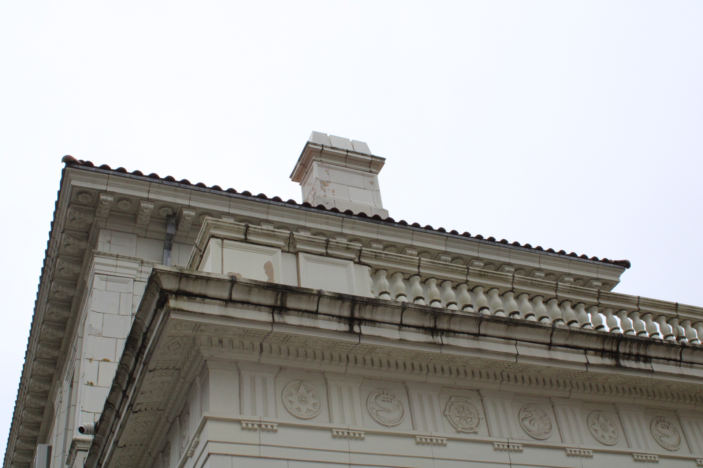
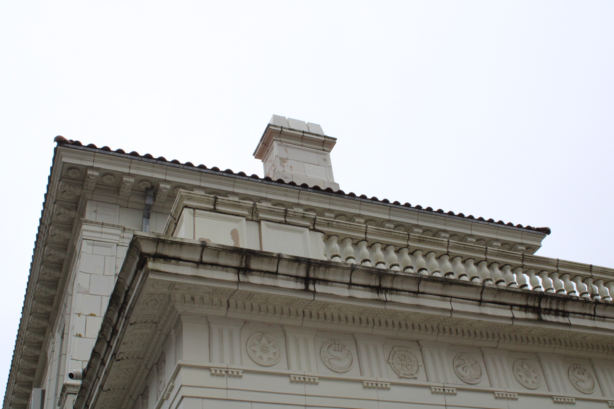
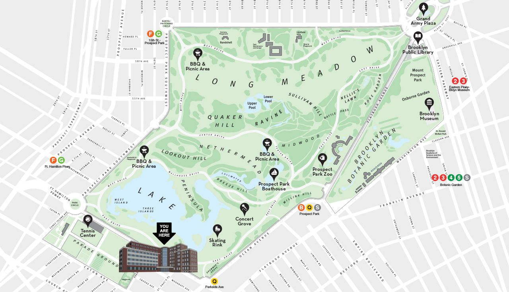
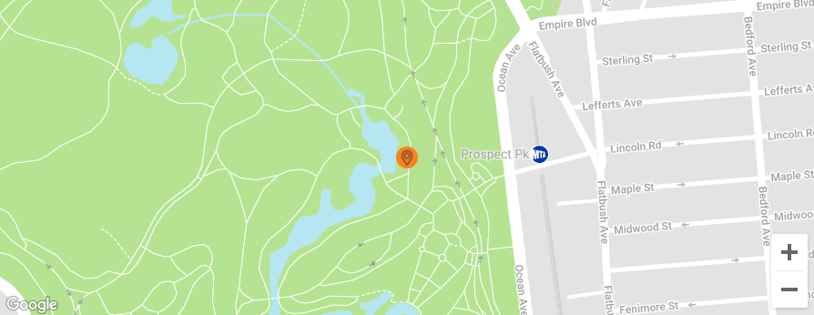

History
Architectural Style: Renaissance Revival/Beaux-Arts
When Frederick Law Olmsted and Calvert Vaux designed this great park during the 1860's, they built man-made structures to enhance the natural beauty of the park, and provide places to congregate for events, or sit and enjoy the natural preserve.
“In the 1890's America began a love affair with classical architecture and monumental structures. The world's Columbian Exposition in Chicago in 1893 was famous for its formal appearance and heavily ornamented buildings. Out of this display came what has been called ‘city beautiful’ movement. Cities throughout the nation Set about creating elegant plazas, erecting commemorative arches and dedicating memorial statues.” (NY Times)
The first boathouse, built in 1876, sat on piers, and faced south. In 1905, this Classically inspired, terra-cotta encased building was designed to replace it. It faces west, purposefully placed to catch the sunsets over the water, formally known as Lullwater.
The design is based on the first floor of Jacopo Sansovino’s design for the Library of St. Mark, a 16th century building in Venice. It is much simplified from the original.
Lullwater was created artificially, to provide boaters with an introduction to the water before they proceed out into the much more open expanse of The Lake. It was also created artificially by dredging. Rain drainage, some springs and water from water mains keep it filled to a depth of as much as 16 feet in some places.
The Boathouse held 200 aluminum rowboats and was equally popular with romantic young people, family groups, and oldsters who wanted to leave the cares of the city behind them for an outing on the 57‐acre lake in the sprawling 526‐acre park. It was the headquarters for boat rental operations and for food service.
Boat rentals required a $10 deposit and then a $1.50 an hour rental fee. Riders were required to wear Coast Guard approved life preservers and were not permitted to go swimming. Fishing was prohibited to all except children younger than 16 years.
During the 20th century, the boats were moved elsewhere, and the building was used for a number of purposes, and was not maintained, and was horribly rundown, a story repeated in all of our public parks’ histories. In 1964, Brooklyn poet Marianne Moore, and other preservationists rallied to save the boathouse, and managed to do so literally 48 hours before it was scheduled to be torn down. The Landmarks Law was passed in 1966, and the Boathouse was declared a city landmark in 1968, even before the park itself was landmarked in 1975. The Boathouse was placed on the National Register of Historic Places in 1972.
In 1999, the Boathouse went under a $5 million restoration, returning to its former glory, and has since been the backdrop for numerous special events, weddings, or other gatherings.
Current Venue
The Boathouse is exclusively catered by Pulsane and can host 130 to 150 guests seated and 180 to 200 cocktail style. The venue can also flex and host very intimate dinners of 30 to 50 guests. The starting price for the venue is $4500 and bar service is $45 per person.
Maps


Sources
“At the Prospect Park Boathouse, What Items and Services Related to Wedding Catering Are Included in the Cost?” WeddingWire, www.weddingwire.com/biz/the-prospect-park-boathouse-brooklyn/885ae951d1d7f13a.html.
Coneybeare, Matt. “Brownstoner Gives a Brief History of the Gorgeous Prospect Park Boathouse.” Viewing NYC, 10 Mar. 2015, viewing.nyc/brownstoner-gives-a-brief-history-of-the-gorgeous-prospect-park-boathouse/.
Devlin, John C. “Prospect Park Boathouse Is Reopened.” The New York Times, 7 July 1974, www.nytimes.com/1974/07/07/archives/prospect-park-boathouse-is-reopened-boathouse-opens-at-prospect.html.
Spellen, Suzanne. “Building of the Day: Prospect Park Boathouse.” Brownstoner, 5 July 2011, www.brownstoner.com/architecture/building-of-the-day-prospect-park-boathouse/.